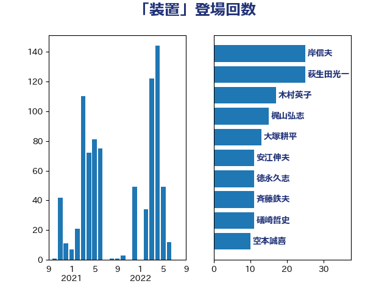

単語「装置」

| 岸信夫 | 自由民主党 | 25 回 |
| 萩生田光一 | 自由民主党 | 25 回 |
| 木村英子 | れいわ新選組 | 17 回 |
| 梶山弘志 | 自由民主党 | 15 回 |
| 大塚耕平 | 国民民主党 | 13 回 |
| 安江伸夫 | 公明党 | 11 回 |
| 徳永久志 | 立憲民主党 | 11 回 |
| 斉藤鉄夫 | 公明党 | 11 回 |
| 礒崎哲史 | 国民民主党 | 11 回 |
| 空本誠喜 | 日本維新の会 | 10 回 |
| 芳賀道也 | 国民民主党 | 9 回 |
| 井上哲士 | 日本共産党 | 8 回 |
| 大島敦 | 立憲民主党 | 8 回 |
| 中西健治 | 自由民主党 | 6 回 |
| 伊藤俊輔 | 立憲民主党 | 6 回 |
| 岩渕友 | 日本共産党 | 6 回 |
| 柳ヶ瀬裕文 | 日本維新の会 | 6 回 |
| 笠井亮 | 日本共産党 | 6 回 |
| 豊田俊郎 | 自由民主党 | 6 回 |
| 森屋宏 | 自由民主党 | 5 回 |
| 浅野哲 | 国民民主党 | 5 回 |
| 田村憲久 | 自由民主党 | 5 回 |
| 赤羽一嘉 | 公明党 | 5 回 |
| 野上浩太郎 | 自由民主党 | 5 回 |
| 音喜多駿 | 日本維新の会 | 5 回 |
| 山崎正恭 | 公明党 | 4 回 |
| 田村智子 | 日本共産党 | 4 回 |
| 船橋利実 | 自由民主党 | 4 回 |
| 西銘恒三郎 | 自由民主党 | 4 回 |
| 上杉謙太郎 | 自由民主党 | 3 回 |
| 佐藤啓 | 自由民主党 | 3 回 |
| 佐藤正久 | 自由民主党 | 3 回 |
| 大家敏志 | 自由民主党 | 3 回 |
| 大西健介 | 立憲民主党 | 3 回 |
| 宮本周司 | 自由民主党 | 3 回 |
| 小西洋之 | 立憲民主党 | 3 回 |
| 山添拓 | 日本共産党 | 3 回 |
| 新妻秀規 | 公明党 | 3 回 |
| 河野義博 | 公明党 | 3 回 |
| 浅田均 | 日本維新の会 | 3 回 |
| 石井正弘 | 自由民主党 | 3 回 |
| 磯崎仁彦 | 自由民主党 | 3 回 |
| 竹内真二 | 公明党 | 3 回 |
| 鈴木敦 | 国民民主党 | 3 回 |
| 鈴木義弘 | 国民民主党 | 3 回 |
| 和田有一朗 | 日本維新の会 | 2 回 |
| 大野泰正 | 自由民主党 | 2 回 |
| 室井邦彦 | 日本維新の会 | 2 回 |
| 小林鷹之 | 自由民主党 | 2 回 |
| 岡田克也 | 立憲民主党 | 2 回 |
| 岸田文雄 | 自由民主党 | 2 回 |
| 市村浩一郎 | 日本維新の会 | 2 回 |
| 末松信介 | 自由民主党 | 2 回 |
| 杉尾秀哉 | 立憲民主党 | 2 回 |
| 東徹 | 日本維新の会 | 2 回 |
| 林芳正 | 自由民主党 | 2 回 |
| 枝野幸男 | 立憲民主党 | 2 回 |
| 柿沢未途 | 無所属 | 2 回 |
| 横山信一 | 公明党 | 2 回 |
| 浜地雅一 | 公明党 | 2 回 |
| 浜田聡 | NHK党 | 2 回 |
| 清水貴之 | 日本維新の会 | 2 回 |
| 熊野正士 | 公明党 | 2 回 |
| 石垣のりこ | 立憲民主党 | 2 回 |
| 穀田恵二 | 日本共産党 | 2 回 |
| 高橋光男 | 公明党 | 2 回 |
| 鬼木誠 | 立憲民主党 | 2 回 |
| 三浦信祐 | 公明党 | 1 回 |
| 上田清司 | 国民民主党 | 1 回 |
| 今井絵理子 | 自由民主党 | 1 回 |
| 今枝宗一郎 | 自由民主党 | 1 回 |
| 伊波洋一 | 無所属 | 1 回 |
| 加田裕之 | 自由民主党 | 1 回 |
| 務台俊介 | 自由民主党 | 1 回 |
| 土田慎 | 自由民主党 | 1 回 |
| 堀内詔子 | 自由民主党 | 1 回 |
| 塩川鉄也 | 日本共産党 | 1 回 |
| 塩田博昭 | 公明党 | 1 回 |
| 宮崎雅夫 | 自由民主党 | 1 回 |
| 小池晃 | 日本共産党 | 1 回 |
| 小沼巧 | 立憲民主党 | 1 回 |
| 小野泰輔 | 日本維新の会 | 1 回 |
| 山下芳生 | 日本共産党 | 1 回 |
| 山崎誠 | 立憲民主党 | 1 回 |
| 山本博司 | 公明党 | 1 回 |
| 山谷えり子 | 自由民主党 | 1 回 |
| 岬麻紀 | 日本維新の会 | 1 回 |
| 川田龍平 | 立憲民主党 | 1 回 |
| 平山佐知子 | 無所属 | 1 回 |
| 後藤祐一 | 立憲民主党 | 1 回 |
| 末松義規 | 立憲民主党 | 1 回 |
| 末次精一 | 立憲民主党 | 1 回 |
| 本庄知史 | 立憲民主党 | 1 回 |
| 杉久武 | 公明党 | 1 回 |
| 杉本和巳 | 日本維新の会 | 1 回 |
| 松沢成文 | 日本維新の会 | 1 回 |
| 森屋隆 | 立憲民主党 | 1 回 |
| 森田俊和 | 立憲民主党 | 1 回 |
| 橋本岳 | 自由民主党 | 1 回 |
| 水岡俊一 | 立憲民主党 | 1 回 |
| 河西宏一 | 公明党 | 1 回 |
| 津島淳 | 自由民主党 | 1 回 |
| 漆間譲司 | 日本維新の会 | 1 回 |
| 玄葉光一郎 | 立憲民主党 | 1 回 |
| 田村貴昭 | 日本共産党 | 1 回 |
| 畦元将吾 | 自由民主党 | 1 回 |
| 石川昭政 | 自由民主党 | 1 回 |
| 福島みずほ | 社会民主党 | 1 回 |
| 篠原豪 | 立憲民主党 | 1 回 |
| 緑川貴士 | 立憲民主党 | 1 回 |
| 美延映夫 | 日本維新の会 | 1 回 |
| 舩後靖彦 | れいわ新選組 | 1 回 |
| 若松謙維 | 公明党 | 1 回 |
| 菅直人 | 立憲民主党 | 1 回 |
| 菅義偉 | 自由民主党 | 1 回 |
| 葉梨康弘 | 自由民主党 | 1 回 |
| 蓮舫 | 立憲民主党 | 1 回 |
| 角田秀穂 | 公明党 | 1 回 |
| 赤嶺政賢 | 日本共産党 | 1 回 |
| 輿水恵一 | 公明党 | 1 回 |
| 辻元清美 | 立憲民主党 | 1 回 |
| 逢坂誠二 | 立憲民主党 | 1 回 |
| 野田聖子 | 自由民主党 | 1 回 |
| 金子恵美 | 立憲民主党 | 1 回 |
| 鈴木俊一 | 自由民主党 | 1 回 |
| 長坂康正 | 自由民主党 | 1 回 |
| 長浜博行 | 無所属 | 1 回 |
| 阿部知子 | 立憲民主党 | 1 回 |
| 青山繁晴 | 自由民主党 | 1 回 |
| 青木愛 | 立憲民主党 | 1 回 |
| 高木かおり | 日本維新の会 | 1 回 |
| 高木啓 | 自由民主党 | 1 回 |
| 高橋はるみ | 自由民主党 | 1 回 |
| 鳩山二郎 | 自由民主党 | 1 回 |